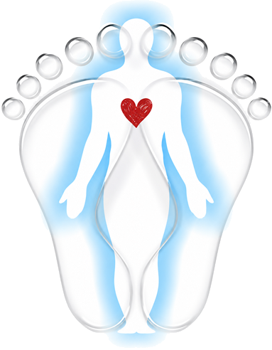

<header class="site-nav">
  <div class="nav-inner">
    <a class="brand" href="index.html">
      
      <span class="brand-text">Vale Reflexology<small>Duopody Reflexology<br>Cowbridge, Vale of Glamorgan</small></span>
    </a>
    <nav aria-label="Primary">
      <ul class="nav-links">
        <li><a href="index.html" data-page="index.html">Home</a></li>
        <li><a href="about.html" data-page="about.html">About Kim</a></li>
        <li><a href="services.html" data-page="services.html">Services &amp; Prices</a></li>
        <li><a href="faq.html" data-page="faq.html">FAQ</a></li>
        <li><a href="testimonials.html" data-page="testimonials.html">Testimonials</a></li>
        <li><a href="news.html" data-page="news.html">Reflexology Weekly</a></li>
        <li><a href="contact.html" data-page="contact.html">Contact</a></li>
      </ul>
    </nav>
    <div class="nav-cta">
      <a class="btn btn-gold" href="booking.html"><span class="long">Book</span> Appointment</a>
      <button class="nav-toggle" aria-label="Toggle menu" aria-expanded="false"><span></span><span></span><span></span></button>
    </div>
  </div>
</header>
